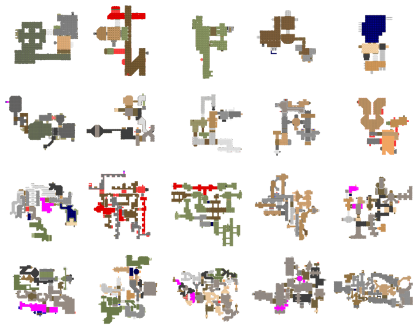
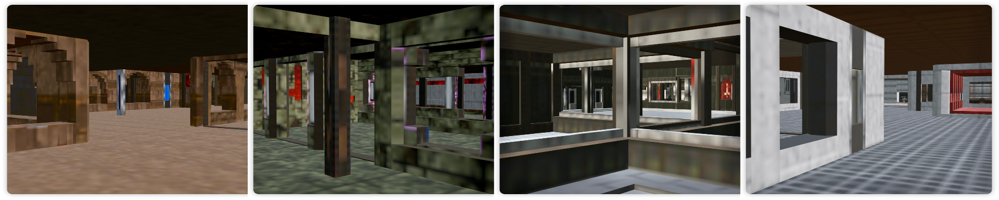

AiMDoom Dataset
Random maps from the AiMDoom dataset, categorized into four levels by scene size and complexity, with 100 scenes per level, arranged from top to bottom: Simple, Normal, Hard, and Insane.
Indoor captures from AiMDoom.


Previous state of the art
Our method
Previous state of the art
Our method
Previous state of the art
Our method
Previous works mainly focus on using reinforcement learning (RL) or uncertainty prediction methods.
We improve the NBV-based SOTA method MACARONS with RL (the video in the second row), but it still underperforms our approach by a large margin.
@inproceedings{
li2025nextbestpath,
title={NextBestPath: Efficient 3D Mapping of Unseen Environments},
author={Shiyao Li and Antoine Guedon and Cl{\'e}mentin Boittiaux and Shizhe Chen and Vincent Lepetit},
booktitle={The Thirteenth International Conference on Learning Representations},
year={2025},
url={https://openreview.net/forum?id=7WaRh4gCXp}
}|
|